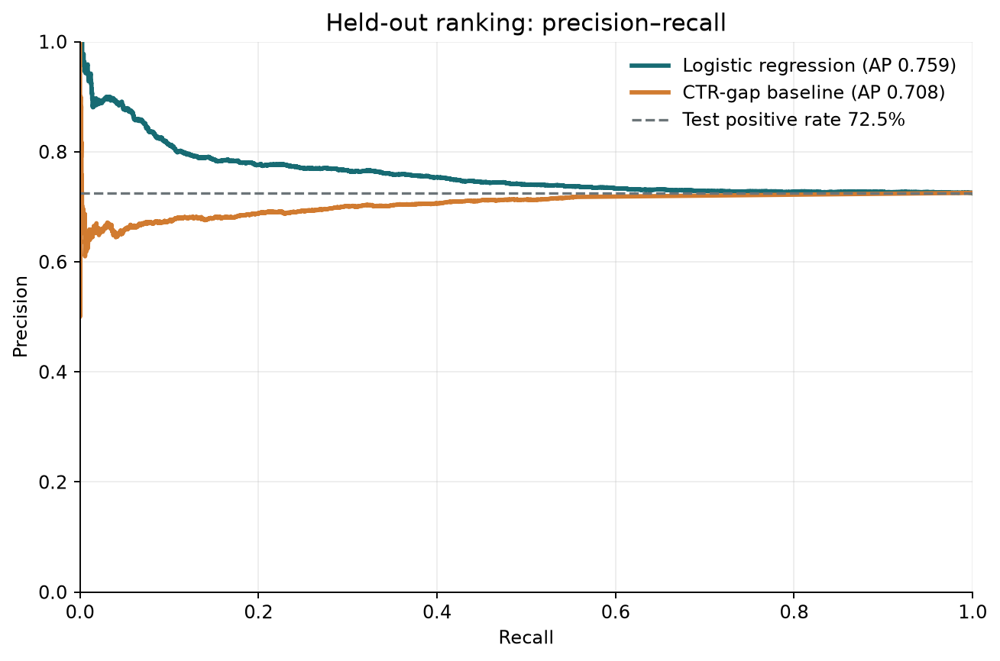
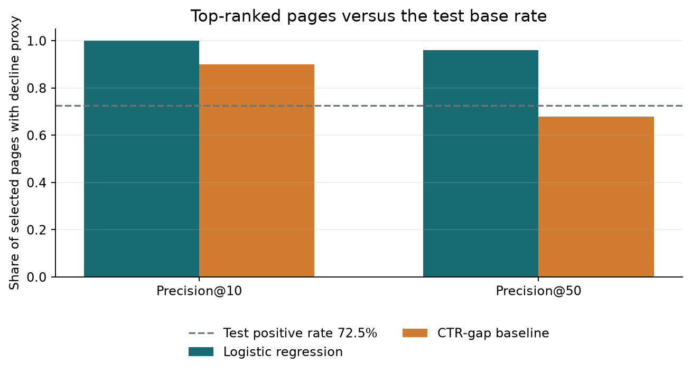
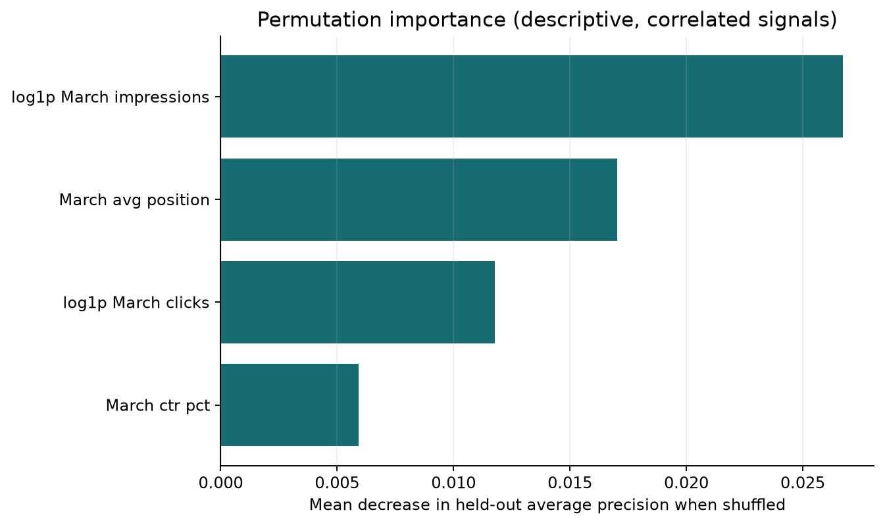

Can March search signals help prioritize pages for review?
A client-held-out study of a simple decline-risk model and a transparent CTR baseline on the gated, anonymized warehouse release. It is a review aid, not a prediction of Google’s algorithm.
Title + Abstract
This capstone asks whether a small, interpretable model can rank content items whose clicks fall in the month after a March 2026 decision snapshot. It uses the FlyRank anonymized warehouse daily-performance table, aggregating March features and April outcomes for 63,498 eligible items from 35 clients. A class-balanced logistic regression uses March-only impressions, clicks, click-through rate, and average position, and is compared with a transparent within-position CTR-shortfall rule on a client-held-out test set. On the held-out clients, logistic regression achieves average precision 0.759 versus 0.708 for the baseline, against a held-out positive-label base rate of 72.5%; Precision@50 is 96.0% versus 68.0%. ROC-AUC is 0.530, so this is weak, directional review evidence against a noisy proxy—not a forecast of Google’s algorithm or evidence that editing a page causes clicks to recover.
Introduction / Problem statement
Editors have limited time. This study asks whether observable March search signals can help order pages for review when April clicks are at least 20% below March clicks. The output is a ranked review list: a human checks seasonality, measurement coverage, SERP context, and page relevance before taking action. A false positive costs review time; a false negative may leave a decline unchecked. The model supports prioritization only and never edits or publishes content automatically.
Data
The source is the gated FlyRank/internship-warehouse release, build v20260703. It contains a 78,835,655-row daily fact table overall; this analysis reads only the March 2026 feature partition and April 2026 label partition, then aggregates to client-content-month. It filters to rows where gsc_data_available IS TRUE. Before using the shared March cutoff, I checked dim_clients.gsc_data_start and excluded clients with unknown starts or a start after 2026-03-01. The eligible cohort also requires March clicks > 0, at least 100 March impressions, and active April GSC coverage.
Inputs are March Google Search Console impressions, clicks, derived CTR, and average position. The label is April clicks ≤ 80% of March clicks. If a client has April GSC coverage but an individual content item has no April fact row, that item is treated as having zero April clicks. The daily grain check found 0 duplicate March and 0 duplicate April date/client/content groups. Client and content hashes are used only for joining and the client-grouped split; no IDs, URLs, titles, domains, or queries appear in this paper or its committed outputs. Trend fields and April columns are never model features. Read the data dictionary and data-use rules.
The label is retrospective and noisy: a 20% click decline is a directional review proxy, not proof that a page needs a refresh.
Methodology
The eligible client-content items are split by client using GroupShuffleSplit: 26 clients for training and 9 held out, with seed 42 and zero overlap. The model is median imputation, standardization, and class-balanced logistic regression (C=1, max_iter=2000). Features are log1p(March impressions), log1p(March clicks), March CTR, and March mean position. March data is the only feature window; April is used only to define the evaluation label.
The baseline is a March-only CTR-opportunity heuristic: within position bands, subtract observed CTR from the training-client median CTR and weight a positive gap by log(1 + impressions). Both rankings are evaluated on the same held-out rows and label. Identifiers are not features. View the reproducible script.
Results: model versus baseline
Test positive prevalence is 72.5%, versus 55.9% in training; this client-level shift limits generalization from one split. Precision@K is shown beside the test base rate. Model AP (0.759) is modestly above the baseline (0.708) and no-discrimination reference (0.725), but ROC-AUC is near chance (0.530); evidence is weak and directional.
| Method | Average precision | Precision@10 | Precision@50 | ROC-AUC |
|---|---|---|---|---|
| Logistic regression | 0.759 | 100.0% | 96.0% | 0.530 |
| CTR-gap baseline | 0.708 | 90.0% | 68.0% | 0.477 |
| No-discrimination reference | 0.725 | 72.5% | 72.5% | 0.500 |
Label-rate sensitivity to the March volume floor
The decline-proxy rate changes as low-impression items are excluded; the main model uses the 100-impression floor.
| Minimum March impressions | Eligible items | Positive-label rate |
|---|---|---|
| 1 | 68,624 | 61.5% |
| 100 | 63,498 | 59.8% |
| 500 | 51,062 | 57.5% |


Held-out permutation importance
| Feature | Mean decrease in AP ± standard deviation |
|---|---|
| log1p_march_impressions | 0.0267 ± 0.0046 |
| march_avg_position | 0.0170 ± 0.0010 |
| log1p_march_clicks | 0.0118 ± 0.0015 |
| march_ctr_pct | 0.0059 ± 0.0011 |

Limitations & honest framing
- The 20% decline threshold is a proxy; it can reflect noise, seasonality, or measurement changes rather than an actionable content problem.
- March-to-April is one adjacent month pair; it does not establish generalization to other seasons, clients, or future cohorts/periods.
- Clients are held out, but items from each client still share broader market and measurement context; the test set is not a randomized experiment.
- Average position and CTR are aggregates, and page-level April rows missing for an active client are treated as zero clicks.
- Class-balanced logistic probabilities are not calibrated action probabilities. Feature importance is predictive, not causal.
- This analysis does not predict Google’s ranking algorithm or prove that a refresh will recover clicks.
Ranked recommendations
- Review the highest-scored items first. Use the score to prioritize attention; the public artifacts contain only aggregate results, not item-level IDs.
- Check measurement and seasonality. Verify April GSC availability and examine demand changes before interpreting a decline as content decay.
- Inspect snippet and intent fit. A human should compare search intent, SERP context, page quality, and technical status before making an edit.
- Test changes prospectively. Record the change date and use a suitable control or time-aware evaluation before claiming an uplift.
Operational guardrail: review queue only; no automatic publishing, pruning, or causal claims.
Reproducibility
Install the repo requirements, accept the Hugging Face dataset terms, and provide a READ token through HF_TOKEN . The token is never hardcoded in the notebook or repository.
python -m pip install -r requirements.txt
python work/scripts/run_capstone.py --source warehouseSeed 42; 25% grouped client holdout. The script reads only March and April partitions and saves aggregate results to work/outputs/capstone_metrics.json, with aggregate action counts in work/outputs/capstone_action_summary.json. See the capstone notebook, repository, and full capstone report.
Dataset reads are pinned to immutable Hugging Face revision 50cbf7c3909d07be4d1b5906b4d09e882e5acbf2. A future update to the dataset will not silently change this run's source.
Acknowledgments & data credit
Built on the FlyRank ML Internship dataset. The analysis publishes only aggregate, pseudonymized data results.